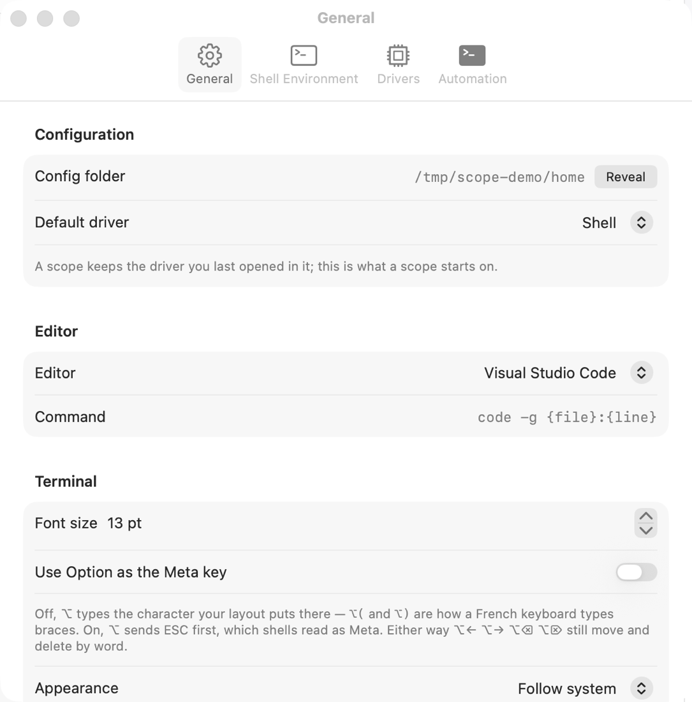

Scopes, threads, drivers
Five nouns carry the whole app. Learn them once and every panel makes sense.
Scope
A folder you declared. It is the unit of everything: the sidebar shows one scope at a time, tasks belong to a scope, the graph is cached per scope. A scope has a name, a slug (unique, used for file names) and a discovery depth.
Scopes may nest — declaring ~/Developer and ~/Developer/acme both is allowed; each
keeps its own tasks and graph.
Repository
A git repository found inside the scope. Scope reads it — HEAD, default branch, remotes, status — and never writes to it, except when you explicitly commit, push or pull from a panel. A repository row shows the repo name; the owner appears in the tooltip.
Thread
A driver running in an embedded terminal (a real PTY, via SwiftTerm), with a working directory, a title and a persisted record. Threads are listed in the sidebar and switched from there; ⌘1–⌘9 jump to one in sidebar order, ⇧⌘[/⇧⌘] cycle.
Each thread receives:
| Variable | Value |
|---|---|
SCOPE_THREAD | 12-hex thread id, also the record file name |
SCOPE_SCOPE | the scope's slug |
SCOPE_SCOPE_ROOT | absolute path of the scope folder |
SCOPE_HOME | ~/.scope, or wherever you pointed it |
SCOPE_SOCK | unix socket the hooks report to |
SCOPE_TASK, SCOPE_TASK_ROOT | only in a task thread: its slug and root |
SCOPE_PORT | only in a task thread: the first of the task's ten ports |
Stopping a thread (⌘.) leaves its row greyed with an exit toast for ten seconds — long enough to relaunch or read the status. Turn on Close exited threads in Settings to have them disappear instead; ⌘Z or ⇧⌘T undoes a close for thirty seconds, Edit ▸ Undo for five minutes. A stopped thread stays stopped across a restart; only the ones still running when Scope went down come back on their own (Relaunch running threads when Scope opens, same section), and an agent brought back mid-turn is asked to continue its work (Ask agents to continue after a restart).
Closing a thread, without regret
Nothing destructive sits under the pointer in the sidebar: a row's hover controls are Open in Editor (tasks) and a … menu, and Close Thread, Archive and Close Task live in that menu, in the context menu, in the menu bar (⌘W, Thread ▸ Task) and in the palette. Scope asks before closing or archiving only when something would be lost — an agent in the middle of a turn, a shell with a process still running, uncommitted changes, an open pull request (Ask before closing a thread mid-turn or archiving a task with work in progress in Settings, one switch for both) — and Cancel is the default button, so a Return typed for the terminal confirms nothing. A quiet thread or a finished, merged task goes in one click.
Either way it can be taken back for five minutes: a toast says “Title” closed — Reopen or “Name”
archived — Undo for ten seconds (naming the agent when one asked over scope thread close or
scope_task_archive), and Edit ▸ Undo or the palette do the same afterwards. ⌘Z and
⇧⌘T (the last thread) work for thirty seconds after a close or archive of your own; an agent's is
never on a shortcut, so a ⌘Z typed in a text field stays a text undo. A reopened thread picks its driver session back up when the profile knows how; a restored task comes
back with its sandboxes and its changes. Closing a task for good has no undo, which is why it stands behind the
same question.
Orchestrator and terminal
Every scope keeps two threads at its root that you never open yourself: an Orchestrator — an agent to drive the scope from, open tasks and talk to the other threads — and a Terminal, a shell to check or try something by hand. They sit at the top of the sidebar (⌘1 and ⌘2), outside Loose threads, in both arrangements.
- They cannot be closed — no close button, ⌘W only beeps,
scope thread closerefuses. They go only when their scope is removed. - ⌘. stops one, and it stays stopped until Relaunch or until Scope opens again; hold ⇧ while Scope opens to keep it stopped then too.
- A process that ends on its own starts again within a second: a crash resumes the driver session, an
exitgets a new one. Three exits in a row within ten seconds of starting, or a command that cannot run, and Scope stops trying and says so. - They start when their scope is first shown, not all at launch; a message sent to one starts it too. ⇧ held while Scope opens leaves them stopped.
- The orchestrator's driver is Settings ▸ General ▸ Threads ▸ Orchestrator driver: automatic picks your default driver, else the first agent installed.
Topics
Tasks that belong to one piece of work can share a topic: in the tree arrangement they sit under one
row named after it, where the first of them stands, with the count and the most urgent state of their threads.
Agents set it — scope task new --topic, and a task created from inside a task inherits its topic —
and so can you: Topic in a task's menu files it under a topic in use, a new one, or none, at any point in
its life — branch, worktrees and running threads are left alone. The tasks it started come along while they still
share its old topic; one filed elsewhere stays. The topic's own menu renames it, ungroups its tasks or archives them
all. By state, tasks sit with what they are doing and the
topic shows in the hover card, with the task an agent created it from.
Several attempts at one brief
When the best approach is uncertain, run the brief more than once. The Attempts stepper of the New Task
sheet, scope task new … --attempts 3 or the MCP argument attempts create that many sibling
tasks under one topic named after the title — Refresh tokens · attempt 1, 2, 3 — with the same
brief, a branch each (feat/refresh-a1…), a thread each, and a model or driver of their own when
--models / --drivers say so (one value applies to all, or one per attempt). An agent's
attempts all count against its task budget: the call is refused with the number when N exceeds what is left.
Compare attempts… in the topic's menu (or the palette) opens one column per attempt: status, tokens, agent time, files changed (+N −M), what the last reply says about tests, and the opening of its deliverable — the report file, or the last answer. Under the columns, the diff of one attempt against another (their branches, as committed) or against the base (the task delta, uncommitted work included), drawn by the same renderer as the Delta column. 1…N put an attempt on the left, ⇧1…⇧N on the right, 0 the base; a click or a ⇧click on a column does the same. The diff's file list can copy a file from one attempt into another (Copy into…): the target is checkpointed first, so nothing is lost to the copy.
Keep this one is the end of it: the chosen task takes the brief's name and the plain branch back
(feat/refresh, its upstream dropped so the next push names where it goes), leaves the topic, and the
other attempts are archived — branches kept, answers kept, a restore away. The Inbox says so once, naming the branches
that were kept. Attempts are worth their cost for high-uncertainty briefs; the skill says as much to the orchestrators.
Tasks started from a task
A task an agent creates from inside another task is not nested under it — the two usually share a topic, which already keeps them together. In the tree, with detailed rows, a quiet child's second line starts with from and the parent's name: click it to select the parent. While one of its agents works or waits, that line is the agent's. The parent's hover card lists the tasks started from it, and the context menu goes either way (Go to Parent Task, Tasks Started From Here).
What each agent is doing
With detailed rows, a thread's second line says what its agent is doing as soon as its driver reports it:
- while it works, the tool it just ran, in words — Editing TaskTopic.swift, Running swift test, Searching "topic", Fetching docs.github.com. A path is cut to its file name; hover the row for the whole of it.
- while it waits, what it asks: the question itself, or Asks to run swift test for a permission when the driver names the tool. Claude Code's permission notification names none, so its permission waits read Waiting for your permission.
- once its turn is over, how and when: Finished · 3m ago, Failed (rate_limit) · 1h ago, Interrupted. Settings ▸ Sidebar ▸ Finished threads can show the first line of its reply instead.
A task with a single thread says the same while its agent works, waits or has a result you have not read; after that its own status (its pull request, its checks) takes the line back. The toolbar under the thread's path says what the agent is doing while it works or waits. Compact rows — the default — stay one line, except a task that is waiting for you or working: it takes the second line for as long as that lasts.
States
The dot on a sidebar row, the pill in the toolbar and the Dock badge all say the same thing:
- Running — the agent is working.
- Waiting — it asked you something: a prompt, a permission.
- Idle — alive, nothing in flight.
- Done — the turn ended.
A task row carries the same dot — the most urgent of its threads — and nothing in front of its name: no driver
icon on a thread row, no status glyph on a task row, since the terminal on the right says which driver runs and the
group the row sits in says what state it is in. The task's status glyph lives on in its hover card: the most pressing
thing about the task, picked in this order — waiting on you, running, setup running, setup failed, done, conflicts,
checks failing, checks running, checks passed, draft pull request, pull request open, changed, clean. The end of the
row is one mark: the state dot of its threads, or a merged chip once its pull requests have landed. The +N −M counts live in the hover card and
the inspector, not in the row, so the name keeps the width; rest the pointer on the row for the branch, the
repositories, the pull request and its checks, the counts, the age and the prompt. A task with a single thread is a
single row — selecting it shows that thread's terminal — and its threads only appear nested from the second one on,
along a thin rule hanging from the task's chevron.
Rows are arranged by state by default — Needs you, Working, Finished, not read, Quiet, Dormant, each header with its count, empty groups skipped — so what wants you is at the top. ⌃⌘G (or Settings ▸ Sidebar ▸ Arrange) switches to the tree, where tasks keep their order and sit under their topic; ⌃⌘L switches between compact and detailed rows. A choice already saved is kept across updates: only a fresh install starts by state with compact rows.
Mark as Read (⇧⌘U, or the thread's context menu) clears a waiting thread's attention once you have seen it: the mark, the badge and the notification go. The next question it asks brings them back.
Since your last visit. Coming back to a scope — switching to it, or bringing the app back after 20 minutes away — shows a line under the scope's header when something moved while you looked elsewhere: Since 11:40 — 1 question for you · checks failing on api-cache · PR merged on token-refresh · 2 turns finished. What waits on you comes first, at most four items. Each one shows the thread or task it names (an archived task opens its pull request); the line goes at your first click, after ten seconds on screen, or with its ×. Nothing moved, nothing shown. Settings ▸ General turns it off and sets the delay.
States come from the driver's own hooks, not from guessing at terminal output. See hooks and thread states.
Driver
How Scope starts a tool: a JSON profile with a command, arguments, environment and optional argv templates
for resuming a session, running headless, or passing an initial prompt. Four are bundled — Shell, Claude Code,
Codex CLI, Cursor CLI — and copied into ~/.scope/drivers/ on first run, where you can edit them.

Task
A named unit of work with a branch and one git worktree per repository it touches. Threads opened inside a task run in its sandbox. Tasks and sandboxes →
The inspector
The right-hand panel, all about the selection. A band at the top names the task and carries the pane
strip — Overview, Changes (badge: changed files), Shell, Browser, Pull requests (badge: failing checks), Files, and ⋮
for the Cards menu — then a column of cards, one header each: closed, a card costs one line and its header still says
the essential at its right; open, it shows the rest. Each card answers one question and says one thing per line: a
glyph, a name, a value. Several can be open at once — the lists share the height, and you drag the gap between two of
them (double-click it to even them out). The cards hold lists only: a diff or a base file opens in a reading column
between the terminal and the inspector, the height of the window and half the terminal's width by default (drag its
edge, double-click it to go back to half; ✕ or Esc closes it). A button of the strip opens its card and its
pane when it has one; Overview closes the pane. It is not a tab bar: every card stays in the column.
The same column holds the task's Shell pane (⌃`, or Shell in the Task menu and the
palette): your login shell in the task's working directory, with the SCOPE_* variables a thread gets —
SCOPE_TASK, SCOPE_TASK_ROOT, SCOPE_PORT, SCOPE_HOME, SCOPE_SOCK — so
scope and your scripts see the task. It is not a thread: nothing in the sidebar, nothing on disk. Tabs hold
several shells (+ opens one, ✕ closes it; a tab says the running command when the terminal reports it, else
the shell's name) and the footer says what was injected. ⌃` shows and hides the pane; ⌘D puts the
diff over it and ⌃` brings it back. Hiding the pane leaves its shells running; closing a tab, archiving or
closing the task hangs them up.
Beside it, the task's Browser pane (⌃⇧B, the globe of the strip, or Browser in the Task
menu and the palette) shows what the task serves: a web view on the dev server of the sandbox, next to its terminal.
A port chip opens it, and so does a ⌘-click on http://localhost:$SCOPE_PORT in a thread or a
shell, or a link in a reply. One tab per server — a link to a server a tab already shows navigates that tab; a page
that opens a window opens a tab. The address bar takes a URL, localhost:3000 or just :41001;
back, forward and reload sit beside it, and ⌘L, ⌘R, ⌘[ and ⌘] work while
the page has the keyboard. The pages are inspectable: Safari ▸ Develop ▸ this Mac lists them, with the Web Inspector's
console and network. Their cookies and storage go to a data store of the scope's own, kept between launches, apart
from Safari's and from anything an agent uses. Which links come here is Settings › General › Browser: any
localhost by default, while the rest of the web goes to your default browser, where you are signed in;
⌥-click sends a link to the other one. Hiding the pane keeps the pages; closing a tab, archiving or closing
the task tears them down.
| Card | Closed, the header says | Open, it shows | Key |
|---|---|---|---|
| Environment | the branch, commits ahead, the base's lag, a setup running or failed | where the branch forked, one row per worktree with its state and +N −M, the setup command with its state as a chip (running with the seconds ticking, ✓ or ✗ with the duration; click for the log), the task's port block with the ports something listens on and one line per listening process (command line, the thread it came from or its pid), then the disk and the agent time; Add Branch, Copy name, Open in Editor and Reveal on hover | |
| Plan | 3/7 steps and the step the agent is on, or no plan yet | what the agent means to do, live: one block per thread that has a plan, its title, then one row per step — an empty circle pending, a dotted one in the accent colour with the agent's Running the tests while it runs, a green check once done, struck; long lists fold after eight rows. A mission task lists its milestones first, the current one open on the steps of the thread doing it. Read from the hooks (Claude Code hooks); the sidebar caption ends with · 3/7 steps while steps remain | |
| Changes | +N −M | the changed files of the task, the working tree, or the branch vs origin | ⌘D |
| Pull requests | its number and the checks — or 2 PRs · 1 merged · 1 checks failing when the task has several | one compact row per pull request — state glyph, title, then repo #n · +a −d · ✗ 1 / 4 · review — the one you pick in full with every one of its checks, and at the foot what it asks of you (Ready to merge, 2 checks failing, Conflicts with the base) with Ask the agent: the conflicts, the failing log or the merge go to the thread as a sentence | |
| Artifacts | https://github.com/maastrich/scopeRT.md · 3 files · 1 page, else how many checkpoints, else nothing yet | the Report (https://github.com/maastrich/scopeRT.md or the declared deliverable: age, +N since the last checkpoint, a Markdown preview of its opening, Read); Files written this task · outside the repo diff (every Write/Edit target and > redirection the hooks reported that git does not track: outside the worktrees, in an ignored folder, or a binary — newest first, with turn and size, the newest image as a thumbnail, a vanished file dimmed as gone; a click opens it in the reading column); Published (the https:// links in the threads' answers: claude.ai artifacts, GitHub PRs, issues and commits, other pages — a click opens the browser); the Checkpoints: time, thread, first words, +N −M, with Show diff, Restore files and Branch from here on hover. The card reads: it never copies, moves or deletes a file | |
| Context | the model of the task's thread and how full its context window is (Fable 5.1 · 38 %), else how long the brief is | the brief (four lines, Read in full for the rest, the topic as a chip), the mission checklist; Given to the agent: one line per context file where the threads start — the ones Scope wrote under each name the installed drivers read, and the repository's own — with its size, a click reading it in the reading column, then the skills the sandboxes hold (.claude/skills) as chips; Model: the model and the driver's version, a context gauge with its percentage when the driver reports one (Claude Code's status line does, relayed by scope-hook statusline), and under it what the task's threads consumed — tokens read, written, share from the cache; and the task's timeline: agent time, time waiting on you and elapsed time, then one lane per thread with its turns as bars, the waits between them tinted (answer, permission, unread result), failed turns in red, and the task's events as ticks (created, PR opened, checks red or green, merged, archived); quiet hours fold into a labelled break; hover a bar for when, how long, how it ended and the first words of the reply; a turn that left a checkpoint has a dot under its bar | |
| Connectors | how many MCP servers and how many are in trouble (3 · 1 needs auth, 4 · 2 failed), else none | hidden by default — the Cards menu brings it in. The MCP servers of the task's live Claude Code threads, trouble first: name, source and transport, tool and call counts, and the state — connected when its tools were listed or called, connecting, failed with its error code (the message on hover), not reported when Claude Code said nothing, or a re-authenticate chip that sends nothing and brings the thread forward for /mcp. One group per thread when the threads disagree, folded past ten rows behind Show all N. Read from Claude Code's transcript and configuration, never edited by Scope; other drivers report no servers | |
| Repository | the branch and how far behind it is | the HEAD commit of the untouched checkout | ⇧⌘B |
| Files, Search, History | the file count, the last query, the HEAD commit | the base's tree, a search across it, its recent commits |
The inspector remembers which cards are open, and which the Cards menu hides, per scope, with and without a task (the last visible card cannot be hidden; Reset to defaults brings them all back, and ⌘D on a hidden Changes shows it again). Without a task, the task's cards stay in place, dimmed, and Repository follows the selected repository. Drag the panel's left edge to resize — every divider in the window catches the pointer a few points on either side of the line, and a double-click puts the column back at its default width; ⌥⌘I hides it.
Inbox, Pull Requests and Graph
The views of the whole scope open from the buttons under the scope name in the sidebar, as a sheet over
the window: Inbox (⇧⌘I) lists what needs you, in every scope; Pull Requests
(⇧⌘P) lists the open pull requests of a repository through gh; Graph
(⌥⌘G) shows one card per repository.
Inbox
One list of what needs the owner, across every scope: threads waiting for an answer or a permission (with the question), turns that finished while you were not looking (the first line of the reply), turns that failed (the error), tasks whose pull request is ready to merge or has a failing check, and tasks archived when their pull request merged (kept three days, with Restore), and the runs of scheduled prompts — Schedule <name> ran, with the first line of the reply (kept three days, or until marked read). Items are grouped by scope, the scope with the newest news first, each with its state, its task and its age. The sidebar button carries the count; it turns to the waiting colour while a thread is blocked on you.
Every action is in place, without moving the selection or the terminal on screen: Reply opens a field under the item and sends the way the sidebar's reply does; Open reveals the thread or the task; Mark as Read clears a thread item, and dismisses a pull request item until the pull request changes; Archive Task, Open Pull Request in Browser and Send the failing checks to the thread do what the inspector does. Keys: j/k move, ↩ open, r reply, e mark read, a archive, o open the pull request, s send the checks, v read a schedule's reply; the foot of the sheet shows the keys of the selected item.
The menu bar item is the same list, compact, with Reply and Open on each item — so an answer can go out without bringing the window up. Its Ask Orchestrator… entry opens the quick panel.
The quick panel, from anywhere
A system-wide shortcut — ⌥Space by default, changed with the recorder in Settings › General › Anywhere — opens a small floating panel over whatever app is in front, without activating Scope, centred on the screen the pointer is on. It has two tabs. Ask is a field addressed to a scope's orchestrator — the current scope unless a tile or ⌃1…⌃9 picks another — sent the way Ask Orchestrator… sends: ↩ sends, ⇧↩ starts a new line, Esc closes. Inbox is the same list as the sheet, questions and permissions first, with Reply and Open in place and j/k, r, e, ↩; ⇧⌘I opens the full sheet. The panel opens on Inbox while a thread waits for you and on Ask otherwise (a setting pins one or the other). A click anywhere else closes it.
A second shortcut, ⌥⇧Space by default, brings the window up — or hides Scope when it is already what you are looking at. Both shortcuts need no permission: they are registered with the system, not read from other apps. macOS does not say when another app holds the same chord; if a press never reaches Scope, pick another one in Settings.